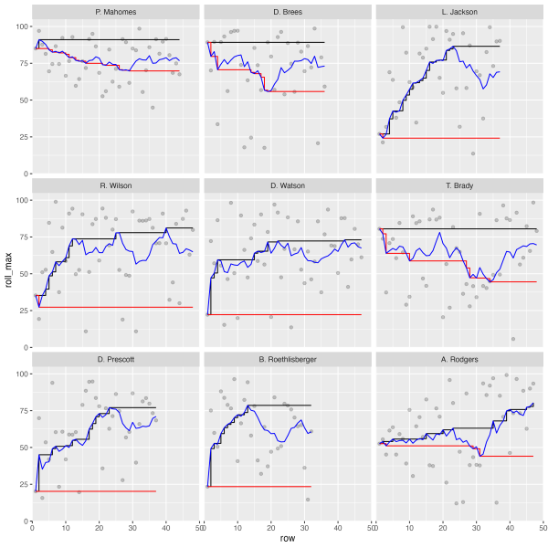

Want to support my blog?
A snapshot of your code state
Because the best way to teach RMarkdown is with RMarkdown.

“It’s basically the rubber duck in disguise” - Jenny Bryan.
The future holds a deeper focus on inclusivity.
Collect and organize all your content, and then customize how it appears on social media.
Creating and testing your own functions is fun!
Spoiler - joins are fastest, and can be easy to prep!
Tables with dark backgrounds deserve transparent logos!
magick is an R package for manipulating images in R
Surviving a pandemic at home.
The best way to make each plot your own.
tidyr + jsonlite are magical.
Efficient display of several measures at once.
HTML is basically a superpower.
Trials and tribulations of the various strategies.
Save time and effort in making beautiful tables
Make tables people ACTUALLY want to read.
It’s more than just a passing fad.
I love simplicity.
Andy, Tom, and ggplot2 walk into a bar…
A meta collection of all things R Markdown.
Because sharing data is caring
It’s turtles all the way down…
Not to be confused with a Game of Thrones
Part 2: How to draw the rest of the owl.
Interactive tables make bad takes more fun.
Pivoting data from wide to long to run many models at once
Doing more with dplyr and SQL
A guide to extracting tables from many PDFs using the pdftools package
Tidy simulation with dice rolls
Put a bird on it - Portlandia.
Making #TidyTuesday better.
A weekly social data project in R
Minimizing repetition with further replication
Working your way through a basic analysis